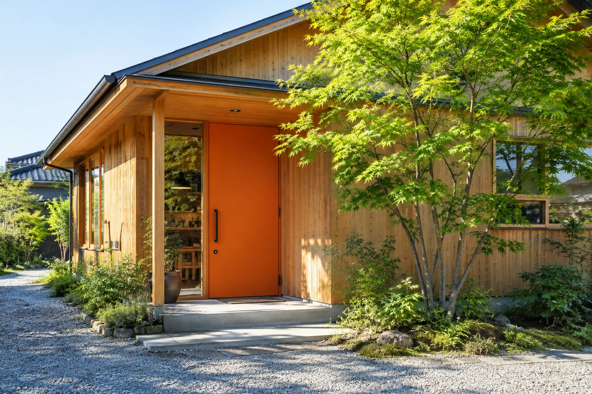
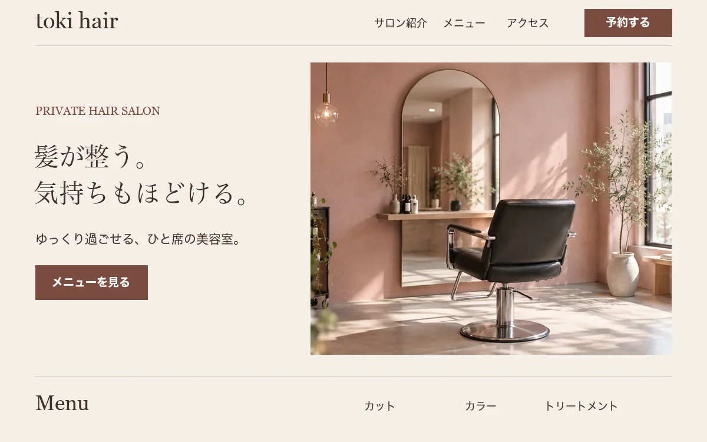
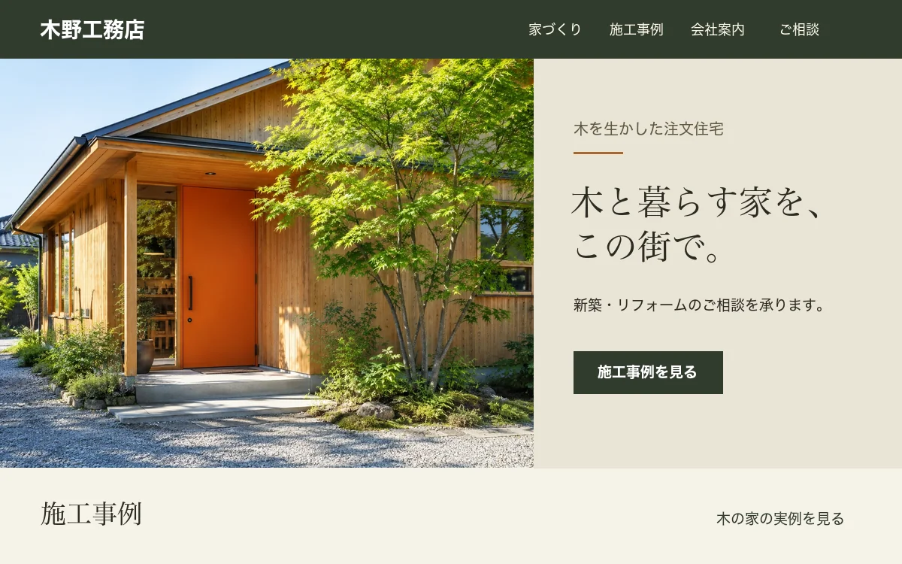
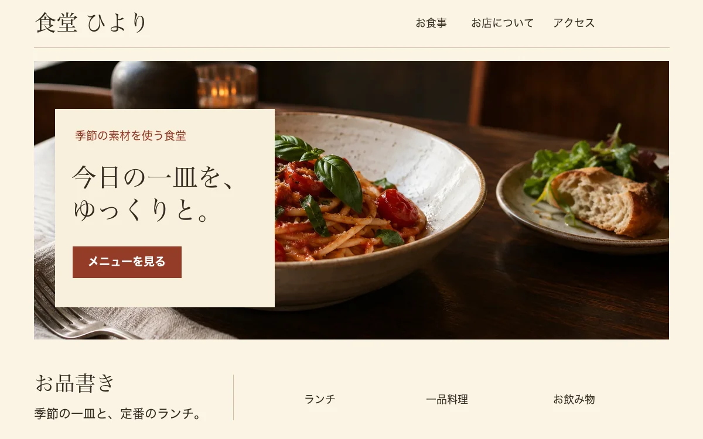
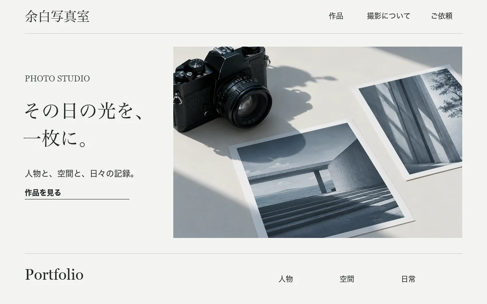
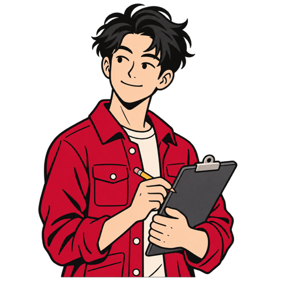
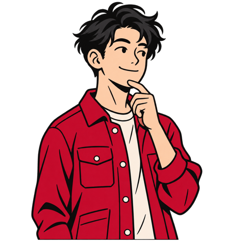

初めてホームページを作る方
開業や新しい事業に合わせて、
ホームページが必要になった。
- 何から決めればいいかわからない
- 写真や文章に何を用意するか迷っている
- 費用の目安や制作期間を先に知りたい
飲食店・美容室・工務店など、個人事業主や小規模事業者のホームページ・LPを制作。掲載内容の整理から、デザイン・公開まで一緒に進めます。



相談から公開・保守まで、
トータルで制作！
開業前でも
ご相談OK

ホームページ制作で
開業や新しい事業に合わせて、
ホームページが必要になった。
ホームページはあるけれど、
思うように活用できていない。
事業の強みを整理し、見た人が次の行動を取りやすいサイトにします。
公開中の自主制作サイトと、業種に合わせたデザイン案をご覧いただけます。
写真と余白で店の雰囲気を伝え、こだわり、メニュー、アクセスを1ページにまとめました。
空間の写真を大きく配置し、施工事例から設計の考え方、相談まで順に読めるようにしました。

内装の雰囲気を写真で伝え、施術メニューや予約先へ進みやすくした美容室サイト案。

家づくりの特徴を写真と短い文章で伝え、施工事例や相談へつなぐ工務店サイト案。

料理写真からお品書きへつなぎ、アクセスなど来店前に知りたい情報をまとめた食堂サイト案。

撮影ジャンル別に作品を見せ、撮影内容や依頼先を案内する写真家のポートフォリオ案。
企画・デザインから制作、公開まで。
Webサイト制作
30,000円〜
事業内容やご要望を伺い、ターゲットや競合サイトを分析。伝えるべき魅力を整理します。
サイト全体の構成や導線を設計。ワイヤーフレームとデザイン案を作成し、Figmaでご提案します。
キャッチコピーや紹介文の作成補助、画像の選定・加工・AI画像生成まで対応します。
事業のイメージに合わせたデザインを制作。スマートフォン・タブレットにも対応します。
HTML・CSS・JavaScriptで実装。メニューやボタンなど、基本的な操作機能を整えます。
お問い合わせフォーム、電話・メール・SNSリンク、Googleマップなどを設置します。
キーワード調査、SEOを意識した文章作成、検索・SNS向け設定、Googleビジネスプロフィールの導入支援まで対応します。
公開先の選定、初期設定、独自ドメイン接続、HTTPS対応からサイト公開までサポートします。
スマホ・PCでの動作や表示速度を確認。公開前の修正2回、納品後の不具合対応まで行います。
※基本料金は小規模な1ページ型Webサイトを対象とします。各サービスには作業範囲・回数の上限があります。ドメイン・サーバー・有料外部サービスの実費、追加機能は別途となります。
制作費は着手時50％、納品時50％が基本です。
必要な制作工程をまとめて、
横にスライドして他社の項目を見る
※制作範囲やページの長さ、原稿制作、フォーム、運用サービスなどには違いがあります。同一仕様の見積金額や品質を比較したものではありません。NextSpringsの追加ページ・追加機能、ドメイン・サーバー・有料外部サービスの実費は別途となります。
制作の工程は大切に。余分なコストは、できるだけ少なく。
NextSpringsでは、小規模事業者の方にも気軽にWebサイトを持っていただけるよう、制作体制と作業工程を工夫しています。
ご相談、ヒアリング、構成提案、デザイン、コーディングまで、原則として同じ担当者が進行します。
複数の担当者を介さないことで、情報共有や確認にかかる時間を削減。ご要望を直接制作に反映できる体制を整えています。
基本プランは、スマートフォン対応の1ページ型Webサイト。
多機能なシステムや大規模なページ構成を標準料金に含めず、事業の魅力を伝えるために必要な機能を中心に制作します。
大規模な制作組織を前提とせず、制作担当者を中心としたシンプルな体制で進めます。
制作に必要なコミュニケーションと工程を整理することで、余分な管理コストを抑えています。
高額な制作費がハードルになっていた方にも、自分の事業を伝えるWebサイトを持っていただきたい。
それが、NextSpringsの30,000円からのWeb制作です。
準備ができていなくても、 ご相談いただけます。


お問い合わせから 今の状況をお知らせ
事業やお客さま、 今のお悩みを伺う

内容・進め方・ 費用をご提示

文章・デザイン・ 実装を進める

内容と動作を確認し サイトを公開する

表示・リンクを確認 文章・写真を微修正
NextSprings 代表
仕事のこだわりや、お客さまに知ってほしいことをお聞きし、写真や言葉、動きでどう伝えるかを一緒に考えます。全国からご相談いただけます。
制作前に気になること。

1ページを基本に、掲載内容の整理、見出しや短い紹介文のたたき台、デザイン、スマホ対応、公開まで対応します。
まずは事業内容をお聞かせください。手元の素材を確認し、必要なものを一緒に整理します。
追加ページや撮影、基本範囲を超える機能は事前にお見積もりします。ドメイン・サーバーや有料外部サービスの実費は別途ご案内します。
最短で約2週間です。素材の準備状況や制作内容に応じ、見積もり時に公開時期の目安をお伝えします。
保守では月1回まで軽微な差し替えに対応します。変更したい箇所と差し替え後の素材をお送りください。